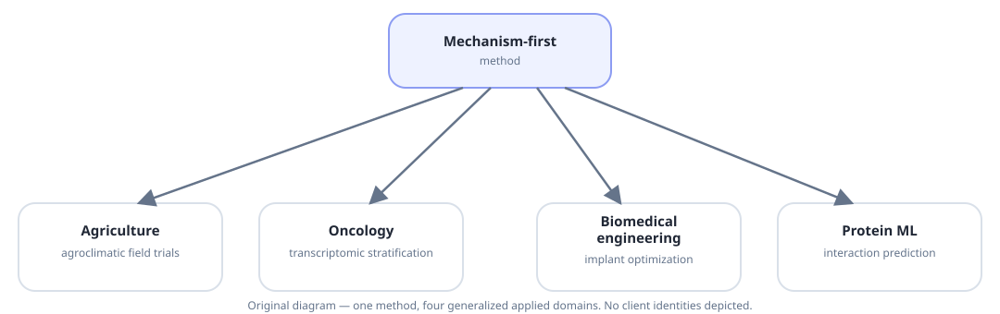

Same reasoning, different domains.
The chapters explain why the method exists. This page shows where else it has been applied: mechanism-first framing, structured representations and evidence-before-interpretation, carried into agriculture, precision oncology and biomedical engineering client work.
This is a selection, not a full CV. Client identities are generalized where the source material does not authorize public naming. Full academic record: Google Scholar · ORCID.

The AidBio software layer
AidWeather, AidViz, AidGSEA and AidFarm are covered in depth in Chapter 05 — Software. This page focuses on applied engagements built on top of that layer, and on client-facing work outside the AidBio open-source projects.
The same evidence-first method, transferred to new problems.
Agroclimatic field-trial analytics for coffee reproductive development
For a multinational food and beverage client, meteorological variables (temperature, precipitation, radiation, humidity) were combined with experimental field data to analyze coffee reproductive development. Related yield-optimization work modeled flower-to-pod conversion across multiple sites, using negative binomial regression to address count overdispersion and tree-based models to improve predictive accuracy — informing pruning regimes, genotype selection and site-specific harvest scheduling.
Transcriptomic patient stratification in precision oncology
High-throughput RNA-seq was applied to study treatment effects in cutaneous melanoma. Differential expression (DESeq2), dimensionality reduction (PCA, t-SNE) and Gene Set Enrichment Analysis identified pathways associated with drug response, distinguishing sensitive from resistant patient cohorts as candidate predictive biomarkers.
Structure–property optimization of 3D-printed implants
Mechanical testing of additively manufactured Ti-6Al-4V lattice structures (Young's modulus, yield stress, compressive strength) was combined with regression and tree-based machine-learning models to predict structure–property relationships, supporting implant designs that balance mechanical stability with biological compatibility.
gPPIpred and Aid2GO — graph ML for protein interactions and function
Covered in full in Chapter 04 — Models: a published, graph-based protein-protein interaction predictor (gPPIpred) and a complementary heterogeneous-graph workflow for protein-function prediction (Aid2GO), both encoding biological network structure directly into the learned representation.
Different domain, same discipline: identify the mechanism, represent it as structured data, model it without discarding that structure, and keep the evidence traceable enough to challenge.